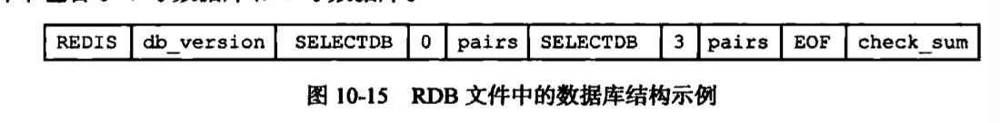

Redis可以将内存中的数据库状态持久化到磁盘中去，提供了两种持久化方法：RDB持久化和AOF持久化。
RDB持久化
RDB创建和加载
RDB文件创建有两个命令：SAVE和BGSAVE
- SAVE，会阻塞Redis服务进程，直到RDB文件创建完毕，此期间服务器不能处理任何命令请求。
- BGSAVE，会派生一个子进程去创建RDB文件，服务器进程继续处理命令请求。
RDB文件恢复是在服务器启动的时候自动执行的，只要Redis服务器启动时检测到RDB文件存在，就自动载入RDB文件，RDB载入期间，服务器会一直处于阻塞，直到载入完成才能提供服务。
由于AOF文件更新频率会比RDB文件更新频率高，所以：
- 如果开启了AOF，则优先使用AOF来还原数据库状态。
- 如果AOF未开启，则使用RDB来还原数据库状态。
另外，SAVE、BGSAVE、BGREWRITEAOF三个命令之间也会有一些互斥的关系：
- SAVE命令执行期间，Redis服务器会被阻塞，所有客户端的请求都会被拒绝。
- BGSAVE是子进程，在执行期间，SAVE命令会被拒绝，新的BGSAVE命令也会被拒绝。
- BGSAVE运行期间，BGREWRITEAOF命令会被延迟到BGSAVE命令执行完毕。
- BGREWRITEAOF执行期间，BGSAVE命令会被拒绝。
dirty计数器和lastsave属性
Redis服务器维持着一个dirty计数器和leastsave属性：
1 | redisServer { |
Redis服务器会周期性的每隔100ms检查，如果条件满足了，就会执行BGSAVE命令。
RDB文件结构

- REDIS，用来快速检查载入的文件是否是RDB文件
- db_verson，记录了RDB文件版本号。
- SELECTDB，程序读入这个值的时候表示接下来要读取的是数据库号码。
- db_number，图中的0和3表示0号数据库和3号数据库，空的数据库不会有。
- pairs，key_value_pairs保存了数据库中所有键值对数据，如果带有过期时间也会和键值对保存在一起。
- EOF，表示RDB文件正文结束。
- check_sum，通过对前面部分计算得出的一个校验和，用来检查RDB是否出错或损坏。
不带过期时间的键值对key_value_pairs：

带过期时间的键值对key_value_pairs：

- TYPE记录了value的类型。
- EXPIRETIME_MS，表示接下来读入的是一个毫秒为单位的过期时间。
- ms，毫秒为单位的UNIX时间戳，表示键值对的过期时间。
AOF持久化
AOF（Append Only File），通过保存Redis服务器所执行的写命令来记录数据库状态，而RDB是保存数据库中的键值对数据来记录数据库状态。
AOF持久化实现
AOF持久化功能实现分为：
- 命令追加append，执行完一个写命令后，会以协议格式将写命令追加到服务器的aof_buff缓冲区末尾。
- 文件写入
- 文件同步sync
文件写入和同步有三个选项appendfsync：
- always，每个事件都要将aof_buf缓冲区中所有内容写入到AOF文件中，并且同步AOF文件，效率最慢，但是最安全，出现故障只会丢失一个事件循环中的命令数据。
- everysec，每个事件循环都要将aof_buf缓冲区所有内容写到AOF文件，并且每隔一秒就要在子线程中对AOF进行同步一次，效率足够快，出现故障会丢失1秒的数据。默认选项是这个。
- no，每个事件循环都要将aof_buf缓冲区内容写到AOF文件中，但AOF文件同步则由操作系统决定，由于不进行同步操作，效率最好，但是出现故障丢失的数据是积累一段时间的数据。
AOF文件载入和数据还原
服务器读取并重新执行一遍AOF文件中保存的写命令：
- 创建一个不带网络连接的伪客户端
- 从AOF文件中分析读取一条写命令
- 使用伪客户端执行被读出的写命令
AOF重写
AOF持久化记录了被执行的写命令，AOF文件会越来越大，会对服务器造成影响，恢复时间也会很长，AOF采用重写rewrite来解决文件膨胀问题，创建一个新的AOF文件代替现有的AOF文件，新旧文件保存的数据库状态相同，但是新文件不会包含冗余的命令，体积会比旧文件小很多。
简单说就是根据数据库现有状态，将现有一个键值对的数据汇总成一条写命令，而不是原来的若干条命令。这样就减少了AOF文件的大小。
AOF后台重写
由于AOF重写会阻塞服务，所以需要采用后台重写，后台重写使用子进程来处理。子进程开始重写文件后，主进程还在继续提供服务，会有新的命令进来，会造成重写后的AOF文件和数据库状态不一致，Redis使用AOF重写缓冲区来解决，Redis服务器执行一个写命令后，会同时将这个命令发送给AOF缓冲区和AOF重写缓冲区。
子进程完成AOF重写工作后，会向父进程发一个信号，父进程会调用处理函数：
- 将AOF重写缓冲区所有内容写到新的AOF文件中，新的AOF文件和服务器当前数据库状态就保持一致了。
- 对新AOF文件改名，并原子的覆盖现有AOF文件，完成新旧文件的替换。
参考
- 《redis设计与实现》（第二版）